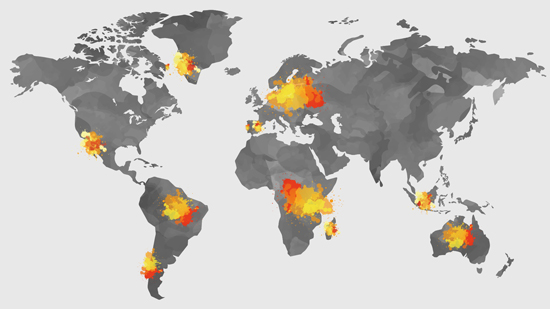

Países o regiones más propensos a tener incendios forestales
Estos territorios se caracterizan por grandes incendios que se repiten de manera cíclica cada año, y en algunos casos el fuego se mantiene casi todo el periodo, como en las selvas del Amazonas y de Borneo.
El Sistema Europeo de Información sobre Incendios Forestales (Effis) indicó este viernes que más de 700.000 hectáreas de bosque en países de la Unión Europea (UE) fueron quemadas por incendios forestales en este 2022, Hasta el momento, entre los países más afectados están
España con 283.000 hectareas arrasadas, Rumania con 150.753 hectáreas, Portugal con 86.631, Francia con 62.102, e Italia con 42.835 hectáreas afectadas.
Quince países o reginoes afectados por los incendios forestales
Ártico, Australia, Brasil, Cnina, California, Canáda, España, Grecia, Indonesia, Italia, Portugal, República de Congo, Siberia, Sudáfrica.
